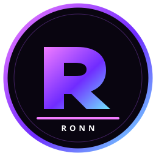

Paste
Enter any supported link into the processor.

RoNN BYPASSRoNN SYSTEM / ONLINE
A sharper way to process links. Built for speed, designed for focus, and made to work beautifully on every screen.
Open the tool ↓INPUT CHANNEL
We'll return the clean result.
✦ Secure request · no link history stored by the interface
Everything you need, nothing you don't. RoNN keeps the journey short so you can keep moving.
Enter any supported link into the processor.
Our API handles the request and validates the response.
Open your result and get back to what matters.
Lean assets, responsive interactions, and an API-first flow keep every action feeling immediate.
No distracting ads. No unnecessary tracking.
Comfortable controls for thumbs and small screens.